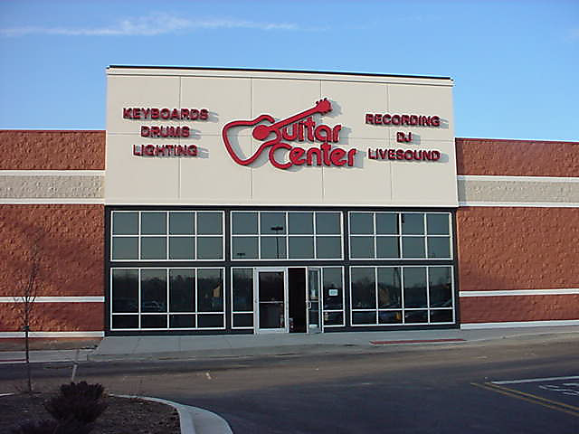
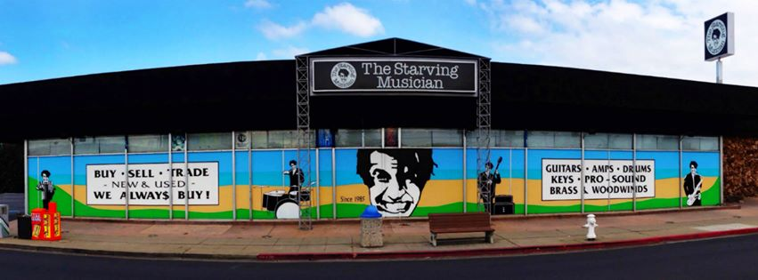
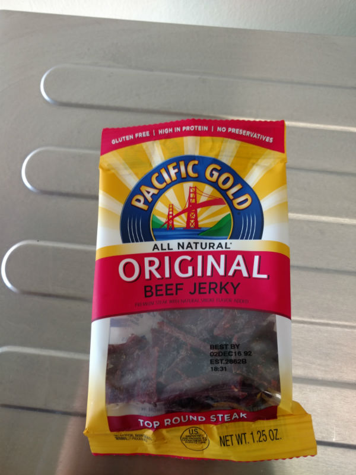
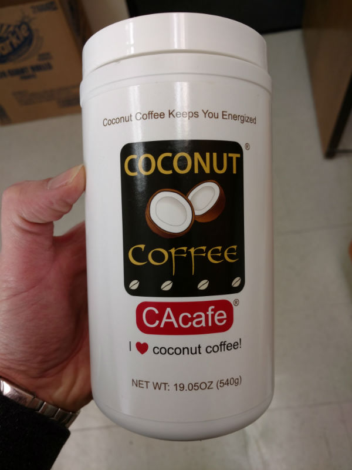

Saison 2
Bon, c’est pas tout ça, mais ma moyenne d’écriture est en chute libre… Ce qui au bout de deux posts est plutôt mauvais signe, vous en conviendrez ! Du coup, ça risque d’être long, alors j’espère pour vous que vous n’avez pas de lait sur le feu ou de train à prendre. Enfin surtout pour moi, parce que si c’est pour pas avoir le temps de lire la fin, je vais pas l’écrire, on gagnera du temps… ;)
Alors, dans l’ordre (de quoi, je sais pas, mais c’est toujours un ordre après tout), grande nouvelle: Houston, on a des tomates ! Oui, oui des vraies tomates, pas en boite ni surgelées ! (des en boite, c’est de la triche et j’avais pas d’ouvre boite alors j’avais l’air d’un âne avec ma conserve… Vous avez en tête la première séquence de 2001 l’odyssée de l’espace ? Ben voila !). Ok, j’ai été aidé sur ce coup là (c’est cool, un boss français !), mais on va dire que ça compte quand même. J’ai même trouvé des oeufs. Si, si des vrais oeuf, d’une couleur normale :D Et pas en boite de 24, juste 6 ! Normal, je vous dis !
Sinon, depuis mon dernier post, un autre évènement d’importance: mon premier week end. Ça faisait longtemps que je ne m’étais pas levé à 8:00 un samedi, mais jetlag + pas de vrais rideaux occultants + “forcément, c’est le jour où t’as rien à faire que tu te réveilles tôt” oblige, pas moyen de se rendormir… Bon, ok, je me lève, je vais faire genre hygiène de vie irréprochable, toussa (on y reviendra…). Alors, déjà, pourquoi y a un chinois qui fait du tai chi devant chez moi ?? Ah, oui, c’est vrai, je suis pas tout seul dans la maison, j’avais tendance à l’oublier, dans ma cabane au fond du jardin… Ah, et le jardin est partagé, donc c’est cool ! Enfin en même temps, vu la flotte, je passe mon tour pour la bronzette dans le jardin. Note pour plus tard, le prochain qui me sort le couplet “Californie = soleil”, il va vraiment falloir qu’on cause ! D’ailleurs, j’ai pu vérifier la réputation sur l’isolation des baraques (ok, c’est pas une vraie maison, mais quand même…) locales. Entre l’humidité et le fait que j’ai juste un chauffage d’appoint, les douches sont rudes… J’envisage de choper un écureil ou deux pour me faire des chaussons. Oui, ici il n’y a pas de chat errant, juste des écureuils… C’est un autre style ! Bref, une fois passé la surprise du chinois dans le jardin, je continue en mode sérieux, direction le lave-o-matic (laundromatic dans la langue de Dr Dre). Bon, c’est le moment où tu te dis qu’il va falloir racheter des fringues, parce que c’est pas avec une lessive par semaine que je vais remplir une machine, moi… Ah oui, et on oublie aussi qu’au pays de l’électro ménager et dans une banlieue résidentielle, les gens ont des laves-linges… Donc tu mets une demie heure à trouver une laverie, normal, mais au moins, elle a le wifi (c’est la Silicon Valley ou c’est pas la Silicon Valley ?).
Ensuite, petite balade. Enfin tour en bagnole, faut pas déconner, manquerait plus qu’on marche !
Et là, le drame. Je suis tombé sur ça:  et ça: 
L’avantage, c’est que ça a occupé une bonne partie de l’après midi, d’autant que contrairement aux magasins de musique français où il faut présenter ton certificat de baptème, une analyse d’urine et ton arbre généalogique sur 17 générations avant de pouvoir essayer une infame guitare coréenne mal réglée et désaccordée (et encore là, tu te demandes si tu ne viens pas de t’oublier sur la jambe du vendeur tellement ça l’enthousiasme), là c’est carrément open bar. Enfin à condition d’avoir des bras de 7 mètres de longs (mince, ça fait combien en pouces, ça ? et en pieds ?) pour attraper certaines guitares en hauteur. Mais une fois que tu as manqué de te tuer en te faisant tomber une basse de 10 kilos sur la tronche, tu peux jouer tant que tu veux, sur les amplis que tu veux, tout le monde s’en fout. L’inconvénient, c’est que repartir les mains vides, c’est très frustrant… Du coup, j’ai trouvé une technique: n’essayer que les instruments les plus chers, comme ça je me pose moins la question de savoir si ça serait raisonnable, je sais déjà que la réponse est non (et en plus, j’ai pas assez de cash pour l’acheter, donc c’est double sécurité) ! Du coup, je n’ai pas pû m’empécher de retourner y faire un tour le lendemain, mais je pense sérieusement qu’il va falloir que j’arrête avant que ça finisse mal… D’autant que je commence à me dire que ça serait un bon moyen de passer le temps, parce que sans TV, avec un internet en mode forfait voyelles et sans bouquins, les soirées sont longues…
Le bon côté, c’est que le samedi, on se couche tôt et le dimanche, on se lève… tôt aussi ! Mais qui dit dimanche, dit brunch. Ok, Google, trouve moi un brunch bien noté à proximité. Los Gatos ? C’est où, ça ? Bon, on s’en fout, de toute façon, il faut que j’abandonne l’idée de trouver un truc à faire à pieds, donc 10 ou 20 minutes de voiture, c’est pareil, en plus, c’est au bout de la rue (comprendre à 10 kms), donc il suffit d’aller tout droit ! A moi Los Gatos ! Là, on découvre que les baraques sympas autour de chez soi sont juste la niche du chien des maisons de Los Gatos… Ok, faudra jeter un oeil aux prix de l’immobilier, juste pour rire… Après avoir pris un brunch plus que correct (et même pas très cher, sachant que j’ai rien mangé avant le soir !), petite balade (à pieds ! wouhou !!) dans le centre de Los Gatos, riante petite bourgade typique de n’importe quelle image d’Epinal (comment on dit ici ? Ils doivent s’en foutre d’Epinal, pour le coup) issue d’une quelconque série ou téléfilm américain… Sauf que là, on y croise les bureaux de imageshack et quand on en ressort, on tombe sur le campus de netflix. Silicon Valley, quand tu nous tiens ! Retour à ma cage à lapins où je profite d’une éclaircie (et de la fin du cours de tai chi) pour me poser un peu sur ma terrasse (enfin de vant la porte, ne nous emballons pas).
Sinon, des fois je bosse, quand même (voir un peu trop certains jours), mais c’est une autre histoire, encore que ça pourrait être dans la catégorie “food”, aussi. Je pense que je n’ai jamais vu une telle quantité de nourriture sur un lei de travail (ok, dans un resto, ça compte pas). Et puis que du sain, genre ça: 
Oui, ce sont bien des sachets de bonbons au boeuf…
En même temps, pour faire passer, on peut prendre ça:  C’est marrant comme au bout d’une semaine, je me dis “ok, laisse courir, tu passeras toujours pour un original avec ton café noir sans sucre…” !
Allez, c’est pas tout ça, mais demain c’est Social Security Office pour demander mon numéro de sécu, il faut que j’en garde un peu, je pense qu’il y aura de quoi raconter (enfin pas trop j’espère…).
La suite au prochain épisode. Stay tuned,
– P.